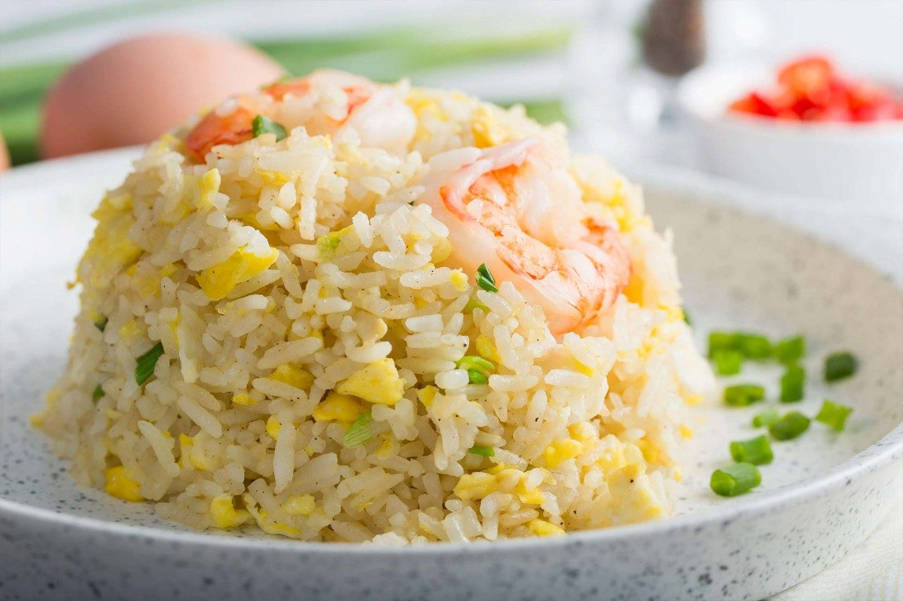

Fried Rice
The Best Fried Rice!

Ingredients
- 8 mid-size prawns (shelled and deveined)
- 1 tsp sugar
- ½ tsp baking soda
- water to cover prawns
- 1 cup ice cubes
- 4 + 4 tbsp oil
- 5 eggs
- 1 tsp chicken stock powder
- 3 cups cooked rice
- ¾ tsp salt
- ¾ tbsp soy sauce
- 2 stalk spring onion (chopped)
- ½ tsp pepper
Instructions
- Prepare the prawns
- In a bowl, mix sugar and baking powder into water.
- Put prawns into water
- Add ice cubes. Leave bowl in fridge for 30 mins.
- Remove, drain and rinse prawns. Set aside.
- Fry prawns
- Heat oil in a pan. Pan fry prawns in medium heat. Cook each side for about 1-2 minute until 80% done.
- Remove from heat and set aside
- Fry Rice
- In the same pan, add in the remaining oil to heat up.
- Add eggs into the pan. Break yolks and stir.
- Add rice and stir. Separate the rice and don’t let them clamp together. Keep stirring around and make sure its evenly coated with eggs.
- Add chicken stock powder and salt. Mix well.
- Add soy sauce and continue to fry until dry.
- Add spring onion and pepper to taste.
- Add prawns and give it a final toss for 15 sec and turn off heat.
Return To Home